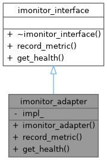
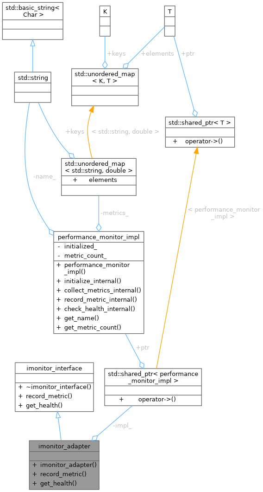
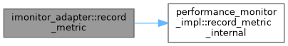

Loading...
Searching...
No Matches
imonitor_adapter Class Reference
Inheritance diagram for imonitor_adapter:

Collaboration diagram for imonitor_adapter:

Public Member Functions | |
| imonitor_adapter (std::shared_ptr< performance_monitor_impl > impl) | |
| void | record_metric (const std::string &name, double value) override |
| void | get_health () override |
 Public Member Functions inherited from imonitor_interface Public Member Functions inherited from imonitor_interface | |
| virtual | ~imonitor_interface ()=default |
Private Attributes | |
| std::shared_ptr< performance_monitor_impl > | impl_ |
Detailed Description
- Examples
- facade_adapter_poc.cpp.
Definition at line 148 of file facade_adapter_poc.cpp.
Constructor & Destructor Documentation
◆ imonitor_adapter()
|
inlineexplicit |
- Examples
- facade_adapter_poc.cpp.
Definition at line 150 of file facade_adapter_poc.cpp.
151 : impl_(std::move(impl)) {}
std::shared_ptr< performance_monitor_impl > impl_
Definition facade_adapter_poc.cpp:164
Member Function Documentation
◆ get_health()
|
inlineoverridevirtual |
Implements imonitor_interface.
- Examples
- facade_adapter_poc.cpp.
Definition at line 158 of file facade_adapter_poc.cpp.
158 {
159 std::cout << "[Adapter:IMonitor] Delegating get_health..." << std::endl;
161 }
void check_health_internal() const
Definition facade_adapter_poc.cpp:109
References performance_monitor_impl::check_health_internal(), and impl_.
Here is the call graph for this function:
◆ record_metric()
|
inlineoverridevirtual |
Implements imonitor_interface.
- Examples
- facade_adapter_poc.cpp.
Definition at line 153 of file facade_adapter_poc.cpp.
153 {
154 std::cout << "[Adapter:IMonitor] Delegating record_metric..." << std::endl;
156 }
void record_metric_internal(const std::string &name, double value)
Definition facade_adapter_poc.cpp:104
References impl_, and performance_monitor_impl::record_metric_internal().
Here is the call graph for this function:

Member Data Documentation
◆ impl_
|
private |
- Examples
- facade_adapter_poc.cpp.
Definition at line 164 of file facade_adapter_poc.cpp.
Referenced by get_health(), and record_metric().
The documentation for this class was generated from the following file:
- examples/facade_adapter_poc.cpp